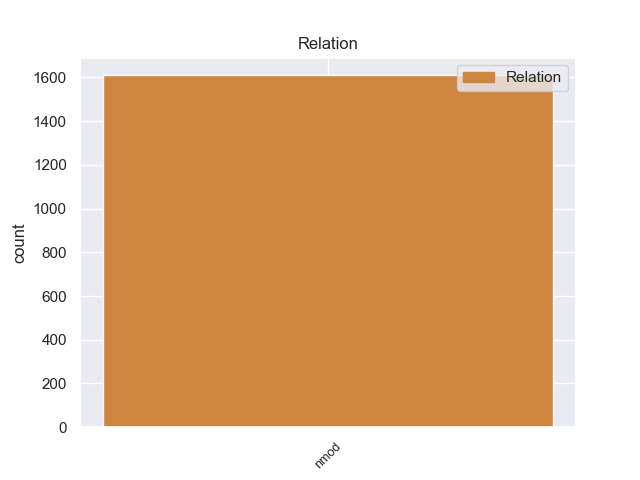
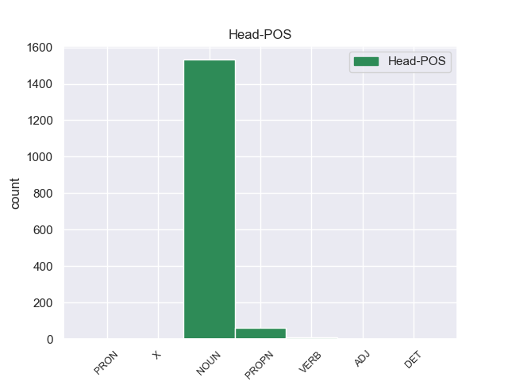
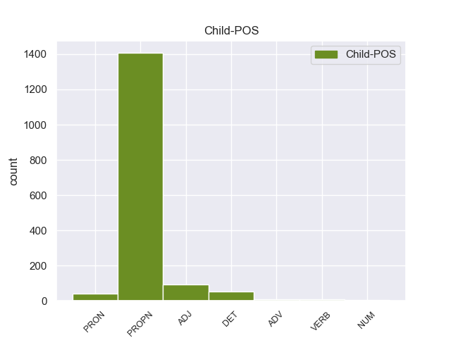

Distribution of features within this leaf



Agreement Rules sorted by frequency.
- When the dependent token is the nominal modifier(nmod) of the head token, and the dependent token is PROPN.
1 De _ _ _ _ 0 _ _ _
2 los _ _ _ _ 0 _ _ _
3 714 _ _ _ _ 0 _ _ _
4 habitantes _ _ _ _ 0 _ _ _
5 , _ _ _ _ 0 _ _ _
6 el _ _ _ _ 0 _ _ _
7 municipio _ _ _ _ 0 _ _ _
8 de _ _ _ _ 0 _ _ _
9 Daggett _ _ _ _ 0 _ _ _
10 estaba _ _ _ _ 0 _ _ _
11 compuesto _ _ _ _ 0 _ _ _
12 por _ _ _ _ 0 _ _ _
13 el _ _ _ _ 0 _ _ _
14 93.28 _ _ _ _ 0 _ _ _
15 % _ _ _ _ 0 _ _ _
16 blancos _ _ _ _ 0 _ _ _
17 , _ _ _ _ 0 _ _ _
18 el _ _ _ _ 0 _ _ _
19 2.38 _ _ _ _ 0 _ _ _
20 % _ _ _ _ 0 _ _ _
21 eran _ _ _ _ 0 _ _ _
22 afroamericanos _ _ _ _ 0 _ _ _
23 , _ _ _ _ 0 _ _ _
24 el _ _ _ _ 0 _ _ _
25 0.84 _ _ _ _ 0 _ _ _
26 % _ _ _ _ 0 _ _ _
27 eran _ _ _ _ 0 _ _ _
28 amerindios _ _ _ _ 0 _ _ _
29 , _ _ _ _ 0 _ _ _
30 el _ _ _ _ 0 _ _ _
31 0.56 _ _ _ _ 0 _ _ _
32 % _ _ _ _ 0 _ _ _
33 eran _ _ _ _ 0 _ _ _
34 asiáticos _ _ _ _ 0 _ _ _
35 , _ _ _ _ 0 _ _ _
36 el _ _ _ _ 0 _ _ _
37 0 _ _ _ _ 0 _ _ _
38 % _ _ _ _ 0 _ _ _
39 eran _ _ _ _ 0 _ _ _
40 isleños isleños NOUN _ Gender=Masc|Number=Plur 0 _ _ _
41 de _ _ _ _ 0 _ _ _
42 el _ _ _ _ 0 _ _ _
43 Pacífico pacífico PROPN _ Gender=Masc|Number=Sing 40 nmod _ _
44 , _ _ _ _ 0 _ _ _
45 el _ _ _ _ 0 _ _ _
46 0.84 _ _ _ _ 0 _ _ _
47 % _ _ _ _ 0 _ _ _
48 eran _ _ _ _ 0 _ _ _
49 de _ _ _ _ 0 _ _ _
50 otras _ _ _ _ 0 _ _ _
51 razas _ _ _ _ 0 _ _ _
52 y _ _ _ _ 0 _ _ _
53 el _ _ _ _ 0 _ _ _
54 2.1 _ _ _ _ 0 _ _ _
55 % _ _ _ _ 0 _ _ _
56 pertenecían _ _ _ _ 0 _ _ _
57 a _ _ _ _ 0 _ _ _
58 dos _ _ _ _ 0 _ _ _
59 o _ _ _ _ 0 _ _ _
60 más _ _ _ _ 0 _ _ _
61 razas _ _ _ _ 0 _ _ _
62 . _ _ _ _ 0 _ _ _
1 En _ _ _ _ 0 _ _ _
2 1991 _ _ _ _ 0 _ _ _
3 , _ _ _ _ 0 _ _ _
4 como _ _ _ _ 0 _ _ _
5 ya _ _ _ _ 0 _ _ _
6 está _ _ _ _ 0 _ _ _
7 indicado _ _ _ _ 0 _ _ _
8 en _ _ _ _ 0 _ _ _
9 el _ _ _ _ 0 _ _ _
10 párrafo _ _ _ _ 0 _ _ _
11 anterior _ _ _ _ 0 _ _ _
12 , _ _ _ _ 0 _ _ _
13 se _ _ _ _ 0 _ _ _
14 creó _ _ _ _ 0 _ _ _
15 un _ _ _ _ 0 _ _ _
16 equipo equipo NOUN _ Gender=Masc|Number=Sing 0 _ _ _
17 ad _ _ _ _ 0 _ _ _
18 hoc hoc ADJ _ Gender=Masc|Number=Sing 16 nmod _ _
19 para _ _ _ _ 0 _ _ _
20 averiguar _ _ _ _ 0 _ _ _
21 como _ _ _ _ 0 _ _ _
22 se _ _ _ _ 0 _ _ _
23 podía _ _ _ _ 0 _ _ _
24 desarrollar _ _ _ _ 0 _ _ _
25 el _ _ _ _ 0 _ _ _
26 Dialogo _ _ _ _ 0 _ _ _
27 Social _ _ _ _ 0 _ _ _
28 , _ _ _ _ 0 _ _ _
29 este _ _ _ _ 0 _ _ _
30 equipo _ _ _ _ 0 _ _ _
31 estaba _ _ _ _ 0 _ _ _
32 formado _ _ _ _ 0 _ _ _
33 por _ _ _ _ 0 _ _ _
34 representantes _ _ _ _ 0 _ _ _
35 de _ _ _ _ 0 _ _ _
36 todas _ _ _ _ 0 _ _ _
37 las _ _ _ _ 0 _ _ _
38 organizaciones _ _ _ _ 0 _ _ _
39 relacionadas _ _ _ _ 0 _ _ _
40 con _ _ _ _ 0 _ _ _
41 CES _ _ _ _ 0 _ _ _
42 , _ _ _ _ 0 _ _ _
43 UNICE _ _ _ _ 0 _ _ _
44 y _ _ _ _ 0 _ _ _
45 CEEP _ _ _ _ 0 _ _ _
46 ; _ _ _ _ 0 _ _ _
1 Jugó _ _ _ _ 0 _ _ _
2 3 _ _ _ _ 0 _ _ _
3 temporadas _ _ _ _ 0 _ _ _
4 con _ _ _ _ 0 _ _ _
5 los _ _ _ _ 0 _ _ _
6 Rockets _ _ _ _ 0 _ _ _
7 , _ _ _ _ 0 _ _ _
8 siendo _ _ _ _ 0 _ _ _
9 la _ _ _ _ 0 _ _ _
10 mejor mejor NOUN _ Gender=Fem|Number=Sing 0 _ _ _
11 de _ _ _ _ 0 _ _ _
12 ellas él DET _ Gender=Fem|Number=Sing|PronType=Dem 10 nmod _ _
13 la _ _ _ _ 0 _ _ _
14 última _ _ _ _ 0 _ _ _
15 , _ _ _ _ 0 _ _ _
16 la _ _ _ _ 0 _ _ _
17 temporada _ _ _ _ 0 _ _ _
18 1970-71 _ _ _ _ 0 _ _ _
19 , _ _ _ _ 0 _ _ _
20 en _ _ _ _ 0 _ _ _
21 la _ _ _ _ 0 _ _ _
22 que _ _ _ _ 0 _ _ _
23 promedió _ _ _ _ 0 _ _ _
24 9,6 _ _ _ _ 0 _ _ _
25 puntos _ _ _ _ 0 _ _ _
26 y _ _ _ _ 0 _ _ _
27 6,2 _ _ _ _ 0 _ _ _
28 rebotes _ _ _ _ 0 _ _ _
29 por _ _ _ _ 0 _ _ _
30 partido _ _ _ _ 0 _ _ _
31 . _ _ _ _ 0 _ _ _
1 Cada _ _ _ _ 0 _ _ _
2 señal _ _ _ _ 0 _ _ _
3 que _ _ _ _ 0 _ _ _
4 el _ _ _ _ 0 _ _ _
5 caporal _ _ _ _ 0 _ _ _
6 hace _ _ _ _ 0 _ _ _
7 es _ _ _ _ 0 _ _ _
8 un _ _ _ _ 0 _ _ _
9 tipo _ _ _ _ 0 _ _ _
10 de _ _ _ _ 0 _ _ _
11 acrobacia _ _ _ _ 0 _ _ _
12 , _ _ _ _ 0 _ _ _
13 en _ _ _ _ 0 _ _ _
14 una _ _ _ _ 0 _ _ _
15 de _ _ _ _ 0 _ _ _
16 ellas _ _ _ _ 0 _ _ _
17 cada _ _ _ _ 0 _ _ _
18 danzante _ _ _ _ 0 _ _ _
19 volador _ _ _ _ 0 _ _ _
20 salta _ _ _ _ 0 _ _ _
21 a _ _ _ _ 0 _ _ _
22 el _ _ _ _ 0 _ _ _
23 vacío _ _ _ _ 0 _ _ _
24 , _ _ _ _ 0 _ _ _
25 sujetado _ _ _ _ 0 _ _ _
26 por _ _ _ _ 0 _ _ _
27 la _ _ _ _ 0 _ _ _
28 cintura _ _ _ _ 0 _ _ _
29 , _ _ _ _ 0 _ _ _
30 boca _ _ _ _ 0 _ _ _
31 abajo _ _ _ _ 0 _ _ _
32 y _ _ _ _ 0 _ _ _
33 afianzándo _ _ _ _ 0 _ _ _
34 se _ _ _ _ 0 _ _ _
35 con _ _ _ _ 0 _ _ _
36 las _ _ _ _ 0 _ _ _
37 piernas _ _ _ _ 0 _ _ _
38 y _ _ _ _ 0 _ _ _
39 gira _ _ _ _ 0 _ _ _
40 13 _ _ _ _ 0 _ _ _
41 veces _ _ _ _ 0 _ _ _
42 cada _ _ _ _ 0 _ _ _
43 uno uno NOUN _ Gender=Masc|Number=Sing 0 _ _ _
44 de _ _ _ _ 0 _ _ _
45 ellos ellos PRON _ Definite=Def|Gender=Masc|Number=Plur|PronType=Art 43 nmod _ _
46 , _ _ _ _ 0 _ _ _
47 que _ _ _ _ 0 _ _ _
48 multiplicado _ _ _ _ 0 _ _ _
49 por _ _ _ _ 0 _ _ _
50 los _ _ _ _ 0 _ _ _
51 cuatro _ _ _ _ 0 _ _ _
52 voladores _ _ _ _ 0 _ _ _
53 da _ _ _ _ 0 _ _ _
54 el _ _ _ _ 0 _ _ _
55 resultado _ _ _ _ 0 _ _ _
56 de _ _ _ _ 0 _ _ _
57 52 _ _ _ _ 0 _ _ _
58 , _ _ _ _ 0 _ _ _
59 ya _ _ _ _ 0 _ _ _
60 que _ _ _ _ 0 _ _ _
61 este _ _ _ _ 0 _ _ _
62 número _ _ _ _ 0 _ _ _
63 es _ _ _ _ 0 _ _ _
64 el _ _ _ _ 0 _ _ _
65 símbolo _ _ _ _ 0 _ _ _
66 de _ _ _ _ 0 _ _ _
67 el _ _ _ _ 0 _ _ _
68 ciclo _ _ _ _ 0 _ _ _
69 de _ _ _ _ 0 _ _ _
70 52 _ _ _ _ 0 _ _ _
71 años _ _ _ _ 0 _ _ _
72 de _ _ _ _ 0 _ _ _
73 el _ _ _ _ 0 _ _ _
74 calendario _ _ _ _ 0 _ _ _
75 indígena _ _ _ _ 0 _ _ _
76 o _ _ _ _ 0 _ _ _
77 Xiuhmolpilli _ _ _ _ 0 _ _ _
78 . _ _ _ _ 0 _ _ _
1 Demichelis _ _ _ _ 0 _ _ _
2 , _ _ _ _ 0 _ _ _
3 defensa _ _ _ _ 0 _ _ _
4 de _ _ _ _ 0 _ _ _
5 el _ _ _ _ 0 _ _ _
6 Bayern _ _ _ _ 0 _ _ _
7 Múnich _ _ _ _ 0 _ _ _
8 costará _ _ _ _ 0 _ _ _
9 a _ _ _ _ 0 _ _ _
10 el _ _ _ _ 0 _ _ _
11 conjunto _ _ _ _ 0 _ _ _
12 malacitano _ _ _ _ 0 _ _ _
13 unos _ _ _ _ 0 _ _ _
14 3 _ _ _ _ 0 _ _ _
15 millones _ _ _ _ 0 _ _ _
16 de _ _ _ _ 0 _ _ _
17 euros _ _ _ _ 0 _ _ _
18 , _ _ _ _ 0 _ _ _
19 un _ _ _ _ 0 _ _ _
20 dinero _ _ _ _ 0 _ _ _
21 que _ _ _ _ 0 _ _ _
22 servirá _ _ _ _ 0 _ _ _
23 para _ _ _ _ 0 _ _ _
24 invertir _ _ _ _ 0 _ _ _
25 en _ _ _ _ 0 _ _ _
26 un _ _ _ _ 0 _ _ _
27 zaguero _ _ _ _ 0 _ _ _
28 que _ _ _ _ 0 _ _ _
29 ha _ _ _ _ 0 _ _ _
30 dado _ _ _ _ 0 _ _ _
31 todo _ _ _ _ 0 _ _ _
32 por _ _ _ _ 0 _ _ _
33 ser _ _ _ _ 0 _ _ _
34 de _ _ _ _ 0 _ _ _
35 nuevo nuevo ADV _ Gender=Masc|Number=Sing 39 nmod _ _
36 el _ _ _ _ 0 _ _ _
37 líder _ _ _ _ 0 _ _ _
38 un _ _ _ _ 0 _ _ _
39 puesto puesto NOUN _ Gender=Masc|Number=Sing 0 _ _ _
40 maldito _ _ _ _ 0 _ _ _
41 en _ _ _ _ 0 _ _ _
42 La _ _ _ _ 0 _ _ _
43 Rosaleda _ _ _ _ 0 _ _ _
44 . _ _ _ _ 0 _ _ _
1 Es _ _ _ _ 0 _ _ _
2 decir _ _ _ _ 0 _ _ _
3 , _ _ _ _ 0 _ _ _
4 si _ _ _ _ 0 _ _ _
5 a _ _ _ _ 0 _ _ _
6 el _ _ _ _ 0 _ _ _
7 tirar tirar VERB _ Gender=Masc|Number=Sing 11 nmod _ _
8 los _ _ _ _ 0 _ _ _
9 dados _ _ _ _ 0 _ _ _
10 el _ _ _ _ 0 _ _ _
11 resultado resultado NOUN _ Gender=Masc|Number=Sing 0 _ _ _
12 es _ _ _ _ 0 _ _ _
13 6 _ _ _ _ 0 _ _ _
14 y _ _ _ _ 0 _ _ _
15 4 _ _ _ _ 0 _ _ _
16 , _ _ _ _ 0 _ _ _
17 solamente _ _ _ _ 0 _ _ _
18 se _ _ _ _ 0 _ _ _
19 podra _ _ _ _ 0 _ _ _
20 entrar _ _ _ _ 0 _ _ _
21 en _ _ _ _ 0 _ _ _
22 las _ _ _ _ 0 _ _ _
23 casillas _ _ _ _ 0 _ _ _
24 respectivas _ _ _ _ 0 _ _ _
25 ; _ _ _ _ 0 _ _ _
1 Además _ _ _ _ 0 _ _ _
2 , _ _ _ _ 0 _ _ _
3 « _ _ _ _ 0 _ _ _
4 What _ _ _ _ 0 _ _ _
5 Makes _ _ _ _ 0 _ _ _
6 You _ _ _ _ 0 _ _ _
7 Beautiful _ _ _ _ 0 _ _ _
8 » _ _ _ _ 0 _ _ _
9 recibió _ _ _ _ 0 _ _ _
10 un _ _ _ _ 0 _ _ _
11 premio _ _ _ _ 0 _ _ _
12 Brit _ _ _ _ 0 _ _ _
13 por _ _ _ _ 0 _ _ _
14 haber _ _ _ _ 0 _ _ _
15 ganado _ _ _ _ 0 _ _ _
16 la _ _ _ _ 0 _ _ _
17 candidatura _ _ _ _ 0 _ _ _
18 de _ _ _ _ 0 _ _ _
19 mejor _ _ _ _ 0 _ _ _
20 sencillo _ _ _ _ 0 _ _ _
21 británico _ _ _ _ 0 _ _ _
22 , _ _ _ _ 0 _ _ _
23 mientras _ _ _ _ 0 _ _ _
24 que _ _ _ _ 0 _ _ _
25 su _ _ _ _ 0 _ _ _
26 vídeo _ _ _ _ 0 _ _ _
27 musical _ _ _ _ 0 _ _ _
28 ganó _ _ _ _ 0 _ _ _
29 el _ _ _ _ 0 _ _ _
30 premio _ _ _ _ 0 _ _ _
31 a _ _ _ _ 0 _ _ _
32 mejor _ _ _ _ 0 _ _ _
33 vídeo vídeo NOUN _ Gender=Masc|Number=Sing 0 _ _ _
34 de _ _ _ _ 0 _ _ _
35 el _ _ _ _ 0 _ _ _
36 2011 2011 NUM _ Gender=Masc|Number=Sing 33 nmod _ _
37 en _ _ _ _ 0 _ _ _
38 los _ _ _ _ 0 _ _ _
39 premios _ _ _ _ 0 _ _ _
40 4Music _ _ _ _ 0 _ _ _
41 Video _ _ _ _ 0 _ _ _
42 Honours _ _ _ _ 0 _ _ _
43 . _ _ _ _ 0 _ _ _
Disagree Examples:
1 Su _ _ _ _ 0 _ _ _
2 hija _ _ _ _ 0 _ _ _
3 , _ _ _ _ 0 _ _ _
4 doña _ _ _ _ 0 _ _ _
5 Mencía _ _ _ _ 0 _ _ _
6 , _ _ _ _ 0 _ _ _
7 casada _ _ _ _ 0 _ _ _
8 con _ _ _ _ 0 _ _ _
9 el _ _ _ _ 0 _ _ _
10 señor señor NOUN _ Gender=Masc|Number=Sing 0 _ _ _
11 de _ _ _ _ 0 _ _ _
12 la _ _ _ _ 0 _ _ _
13 cercana _ _ _ _ 0 _ _ _
14 Beleña beleña PROPN _ Gender=Fem|Number=Sing 10 nmod _ _
15 de _ _ _ _ 0 _ _ _
16 Sorbe _ _ _ _ 0 _ _ _
17 , _ _ _ _ 0 _ _ _
18 trató _ _ _ _ 0 _ _ _
19 de _ _ _ _ 0 _ _ _
20 vender _ _ _ _ 0 _ _ _
21 la _ _ _ _ 0 _ _ _
22 villa _ _ _ _ 0 _ _ _
23 a _ _ _ _ 0 _ _ _
24 comienzos _ _ _ _ 0 _ _ _
25 de _ _ _ _ 0 _ _ _
26 el _ _ _ _ 0 _ _ _
27 siglo _ _ _ _ 0 _ _ _
28 XV _ _ _ _ 0 _ _ _
29 , _ _ _ _ 0 _ _ _
30 y _ _ _ _ 0 _ _ _
31 acabó _ _ _ _ 0 _ _ _
32 por _ _ _ _ 0 _ _ _
33 hacer _ _ _ _ 0 _ _ _
34 lo _ _ _ _ 0 _ _ _
35 a _ _ _ _ 0 _ _ _
36 dos _ _ _ _ 0 _ _ _
37 de _ _ _ _ 0 _ _ _
38 sus _ _ _ _ 0 _ _ _
39 parientes _ _ _ _ 0 _ _ _
40 , _ _ _ _ 0 _ _ _
41 que _ _ _ _ 0 _ _ _
42 la _ _ _ _ 0 _ _ _
43 compraron _ _ _ _ 0 _ _ _
44 juntos _ _ _ _ 0 _ _ _
45 , _ _ _ _ 0 _ _ _
46 Diego _ _ _ _ 0 _ _ _
47 Hurtado _ _ _ _ 0 _ _ _
48 de _ _ _ _ 0 _ _ _
49 Mendoza _ _ _ _ 0 _ _ _
50 , _ _ _ _ 0 _ _ _
51 almirante _ _ _ _ 0 _ _ _
52 mayor _ _ _ _ 0 _ _ _
53 de _ _ _ _ 0 _ _ _
54 Castilla _ _ _ _ 0 _ _ _
55 , _ _ _ _ 0 _ _ _
56 y _ _ _ _ 0 _ _ _
57 Diego _ _ _ _ 0 _ _ _
58 López _ _ _ _ 0 _ _ _
59 de _ _ _ _ 0 _ _ _
60 Estúñiga _ _ _ _ 0 _ _ _
61 , _ _ _ _ 0 _ _ _
62 justicia _ _ _ _ 0 _ _ _
63 mayor _ _ _ _ 0 _ _ _
64 de _ _ _ _ 0 _ _ _
65 el _ _ _ _ 0 _ _ _
66 reino _ _ _ _ 0 _ _ _
67 en _ _ _ _ 0 _ _ _
68 marzo _ _ _ _ 0 _ _ _
69 de _ _ _ _ 0 _ _ _
70 1403 _ _ _ _ 0 _ _ _
71 . _ _ _ _ 0 _ _ _
1 Sin _ _ _ _ 0 _ _ _
2 dar _ _ _ _ 0 _ _ _
3 fechas _ _ _ _ 0 _ _ _
4 de _ _ _ _ 0 _ _ _
5 lanzamiento _ _ _ _ 0 _ _ _
6 , _ _ _ _ 0 _ _ _
7 Skype _ _ _ _ 0 _ _ _
8 aclara _ _ _ _ 0 _ _ _
9 que _ _ _ _ 0 _ _ _
10 su _ _ _ _ 0 _ _ _
11 software software NOUN _ Gender=Masc|Number=Sing 0 _ _ _
12 para _ _ _ _ 0 _ _ _
13 iPad ipad PROPN _ Gender=Fem|Number=Sing 11 nmod _ _
14 mostrará _ _ _ _ 0 _ _ _
15 casi _ _ _ _ 0 _ _ _
16 las _ _ _ _ 0 _ _ _
17 mismas _ _ _ _ 0 _ _ _
18 opciones _ _ _ _ 0 _ _ _
19 que _ _ _ _ 0 _ _ _
20 la _ _ _ _ 0 _ _ _
21 versión _ _ _ _ 0 _ _ _
22 para _ _ _ _ 0 _ _ _
23 iPhone _ _ _ _ 0 _ _ _
24 , _ _ _ _ 0 _ _ _
25 pero _ _ _ _ 0 _ _ _
26 obviamente _ _ _ _ 0 _ _ _
27 diseñadas _ _ _ _ 0 _ _ _
28 para _ _ _ _ 0 _ _ _
29 la _ _ _ _ 0 _ _ _
30 pantalla _ _ _ _ 0 _ _ _
31 más _ _ _ _ 0 _ _ _
32 grande _ _ _ _ 0 _ _ _
33 . _ _ _ _ 0 _ _ _
1 Sin _ _ _ _ 0 _ _ _
2 embargo _ _ _ _ 0 _ _ _
3 , _ _ _ _ 0 _ _ _
4 muchos _ _ _ _ 0 _ _ _
5 investigadores _ _ _ _ 0 _ _ _
6 consideran _ _ _ _ 0 _ _ _
7 que _ _ _ _ 0 _ _ _
8 este _ _ _ _ 0 _ _ _
9 censo _ _ _ _ 0 _ _ _
10 no _ _ _ _ 0 _ _ _
11 representa _ _ _ _ 0 _ _ _
12 el _ _ _ _ 0 _ _ _
13 verdadero _ _ _ _ 0 _ _ _
14 tamaño _ _ _ _ 0 _ _ _
15 de _ _ _ _ 0 _ _ _
16 la _ _ _ _ 0 _ _ _
17 población población NOUN _ Gender=Fem|Number=Sing 0 _ _ _
18 de _ _ _ _ 0 _ _ _
19 tinkers tinkers PROPN _ Gender=Masc|Number=Plur 17 nmod _ SpaceAfter=No
20 . _ _ _ _ 0 _ _ _
1 Si _ _ _ _ 0 _ _ _
2 el _ _ _ _ 0 _ _ _
3 país _ _ _ _ 0 _ _ _
4 debe _ _ _ _ 0 _ _ _
5 solicitar _ _ _ _ 0 _ _ _
6 el _ _ _ _ 0 _ _ _
7 ingreso _ _ _ _ 0 _ _ _
8 en _ _ _ _ 0 _ _ _
9 la _ _ _ _ 0 _ _ _
10 Unión _ _ _ _ 0 _ _ _
11 Europea _ _ _ _ 0 _ _ _
12 ha _ _ _ _ 0 _ _ _
13 sido _ _ _ _ 0 _ _ _
14 uno _ _ _ _ 0 _ _ _
15 de _ _ _ _ 0 _ _ _
16 los _ _ _ _ 0 _ _ _
17 temas tema NOUN _ Gender=Masc|Number=Plur 0 _ _ _
18 más _ _ _ _ 0 _ _ _
19 dominantes _ _ _ _ 0 _ _ _
20 y _ _ _ _ 0 _ _ _
21 divisivos _ _ _ _ 0 _ _ _
22 en _ _ _ _ 0 _ _ _
23 Noruega _ _ _ _ 0 _ _ _
24 debate _ _ _ _ 0 _ _ _
25 político _ _ _ _ 0 _ _ _
26 y _ _ _ _ 0 _ _ _
27 económico _ _ _ _ 0 _ _ _
28 desde _ _ _ _ 0 _ _ _
29 la _ _ _ _ 0 _ _ _
30 Segunda _ _ _ _ 0 _ _ _
31 Guerra guerra PROPN _ Gender=Fem|Number=Sing 17 nmod _ _
32 Mundial _ _ _ _ 0 _ _ _
33 . _ _ _ _ 0 _ _ _
1 Una _ _ _ _ 0 _ _ _
2 erupción _ _ _ _ 0 _ _ _
3 pliniana _ _ _ _ 0 _ _ _
4 es _ _ _ _ 0 _ _ _
5 un _ _ _ _ 0 _ _ _
6 tipo _ _ _ _ 0 _ _ _
7 de _ _ _ _ 0 _ _ _
8 erupción _ _ _ _ 0 _ _ _
9 volcánica _ _ _ _ 0 _ _ _
10 caracterizada _ _ _ _ 0 _ _ _
11 por _ _ _ _ 0 _ _ _
12 su _ _ _ _ 0 _ _ _
13 similitud _ _ _ _ 0 _ _ _
14 con _ _ _ _ 0 _ _ _
15 la _ _ _ _ 0 _ _ _
16 acontecida acontecido NOUN _ Gender=Fem|Number=Sing|VerbForm=Part 0 _ _ _
17 en _ _ _ _ 0 _ _ _
18 el _ _ _ _ 0 _ _ _
19 monte monte PROPN _ Gender=Masc|Number=Sing 16 nmod _ _
20 Vesubio _ _ _ _ 0 _ _ _
21 en _ _ _ _ 0 _ _ _
22 el _ _ _ _ 0 _ _ _
23 año _ _ _ _ 0 _ _ _
24 79 _ _ _ _ 0 _ _ _
25 d _ _ _ _ 0 _ _ _
26 . _ _ _ _ 0 _ _ _